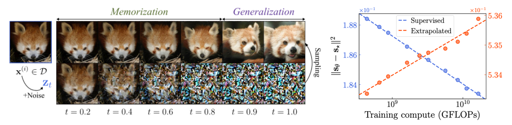

- Supervision region: where the noisy training samples concentrated with a high probability. A model is supervised to learn the empirical score in this region (blue shells).
- Extrapolation region: where the model is actually queried during inference. A model is not supervised to learn the empirical score in this region (red region).
- In supervision region, the learned and empirical scores are sufficiently close that the model reproduces the training images when sampling starts from there.
We first distinguish two regions of the space: supervision region and extrapolation region. Error between the learned score and the empirical score decreases in the supervision region (X underfitting, blue line) but increases in the extrapolation region (O underfitting, red line) as models improve with better FID scores. These two regions can be further characterized as follows:
Therefore, we claim that the right way to understand diffusion models is to think of them as operating by (1) approximating the empirical score within the supervision region and (2) extrapolating it to the extrapolation region, which is ultimately used at inference time.
